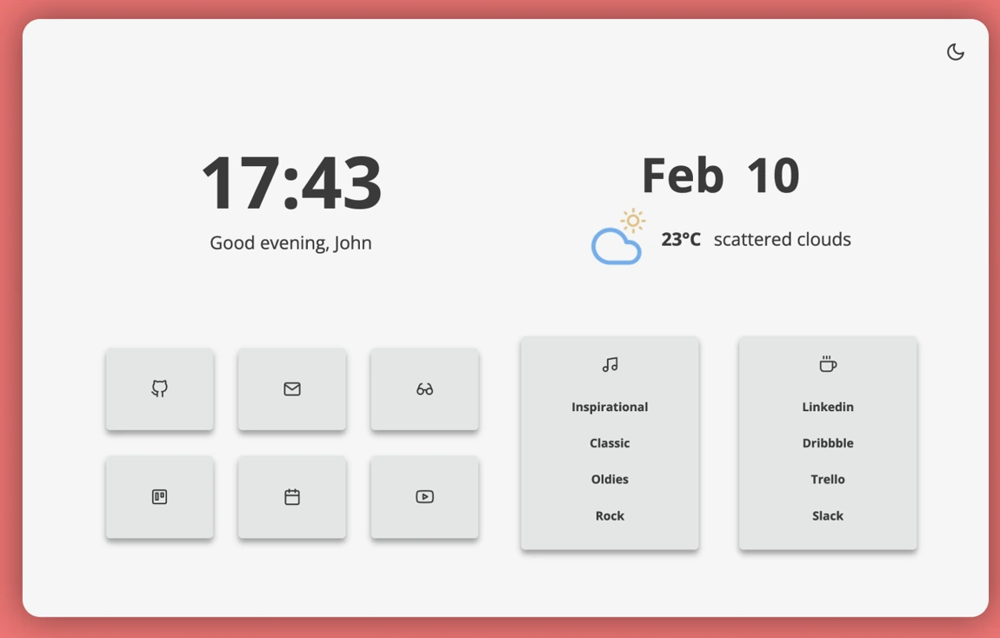
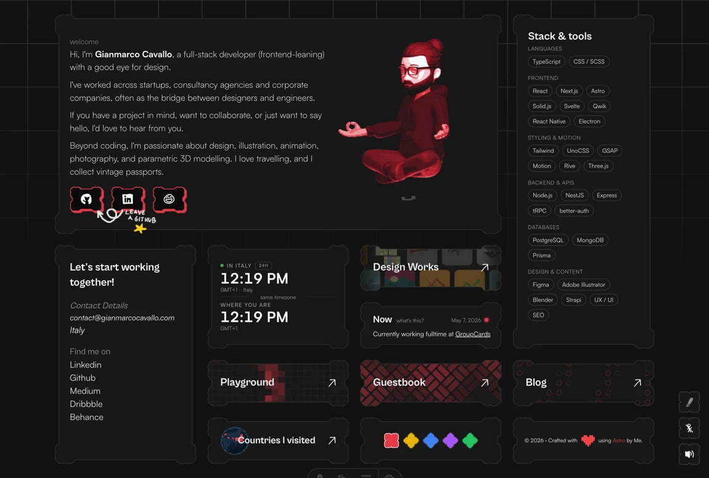
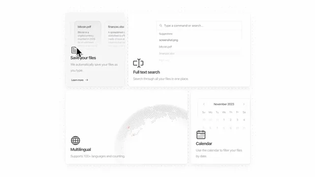
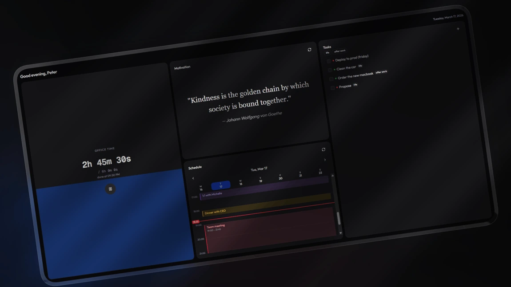

選定理由・ポピュラー
毎日使うリンクには押しやすい小さなボタンを、複数の行き先を束ねたいときは背の高いリストを割り当てています。どちらも同じ高さの範囲に収まるのが作者の「Bento」配列です。
作品・制作の例7件を紹介しています。実作品画像4点、参照・関連画像0点。画像の収集は継続中です。
現代の画面表現・説明用の分類
Bento layouts
大小の四角い箱に、写真や短い説明を分けて入れます。弁当箱の仕切りに見立てて、「ベントー」レイアウトとも呼ばれます。関連する情報を一まとまりにする方法です。
実作品を見る

画像を表示できませんでした。下の出典ページで確認できます。
ミゲル・アビラ / 2020年に開発開始
毎日使うリンクには押しやすい小さなボタンを、複数の行き先を束ねたいときは背の高いリストを割り当てています。どちらも同じ高さの範囲に収まるのが作者の「Bento」配列です。
Miguel Ávila／作者の比較図から「Bento」配列を抜き出し、WebP化。
出典で作品・資料を見る ↗実作品を見る

画像を表示できませんでした。下の出典ページで確認できます。
ジャンマルコ・カヴァッロ（Ladvace）ほか / 2023年に開発開始
自己紹介は横に長く、技術の一覧は縦に長い。ポートフォリオに必要な内容を、同じ大きさの箱に押し込まず、内容が読みやすい形に割り振っています。
© Gianmarco Cavallo and others。作者公開の見本を縮小してWebP化。
出典で作品・資料を見る ↗実作品を見る

画像を表示できませんでした。下の出典ページで確認できます。
Magic UI 開発チーム / 2023年にプロジェクト開始
小さなファイルの束は保存機能、地球儀は多言語対応を表しています。各区画に小さな体験を一つずつ納め、何ができる製品なのかを一覧にしています。
© Magic UI。公式ドキュメントの動画見本から一場面を抜き出しWebP化。
出典で作品・資料を見る ↗実作品を見る

画像を表示できませんでした。下の出典ページで確認できます。
itsP33t／Bento 開発者 / 2026年に開発開始
最初から決めた位置に機能を並べるだけでなく、使う人自身がカードを動かし、サイズを選べます。どの作業を大きく表示するかまで、配置を通じて決められる例です。
itsP33t／作者公開の画面見本を縮小してWebP化。
出典で作品・資料を見る ↗歴史上の定評ある代表作と断定する選定ではありません。制作側の説明や教材から、表現が確かめられる例を区別して掲載しています。
表現が確かめられる制作事例
政策資料を整理するために、制作側がベントー・グリッド（弁当箱のような区画）と説明する配置を使いました。
作品・資料の出典を見る ↗原題：Center for Community Solutions ウェブサイト
スラム・メディア・ラボ / 2023年10月–2024年3月の制作 / ウェブサイト
日本語の見出しは読みやすさのための呼び名・説明名です。原題は記録欄に示しています。
画像の転載条件は未確認。出典の公開は転載許諾ではありません。
表現が確かめられる制作事例
制作者がベントー形式の部分と呼ぶ部分を含む企業サイトです。
作品・資料の出典を見る ↗原題：Inovaxio ウェブサイト
ヴィクター・フェレイラ / 制作年未確認 / ウェブサイト
日本語の見出しは読みやすさのための呼び名・説明名です。原題は記録欄に示しています。
画像の転載条件は未確認。出典の公開は転載許諾ではありません。
参考教材（配置をつくる技術）
画面幅に応じて一列から三列へ組み替える例があります。見た目の順と読み上げ順を合わせる考え方も説明されています。
作品・資料の出典を見る ↗原題：CSS Grid：共通レイアウトの実装例
エムディーエヌの共同執筆者 / 継続更新 / 技術教材（比較資料）
日本語の見出しは読みやすさのための呼び名・説明名です。原題は記録欄に示しています。
画像の転載条件は未確認。出典の公開は転載許諾ではありません。
新しいタブに表示するウェブ画面
毎日使うリンクには押しやすい小さなボタンを、複数の行き先を束ねたいときは背の高いリストを割り当てています。どちらも同じ高さの範囲に収まるのが作者の「Bento」配列です。
作品・資料の出典を見る ↗原題：Bento startpage
ミゲル・アビラ / 2020年に開発開始 / 新しいタブに表示するウェブ画面
作者のポートフォリオ兼テンプレート
自己紹介は横に長く、技術の一覧は縦に長い。ポートフォリオに必要な内容を、同じ大きさの箱に押し込まず、内容が読みやすい形に割り振っています。
作品・資料の出典を見る ↗原題：Astro Bento Portfolio
ジャンマルコ・カヴァッロ（Ladvace）ほか / 2023年に開発開始 / 作者のポートフォリオ兼テンプレート
製品の機能を紹介する画面見本
小さなファイルの束は保存機能、地球儀は多言語対応を表しています。各区画に小さな体験を一つずつ納め、何ができる製品なのかを一覧にしています。
作品・資料の出典を見る ↗原題：Magic UI — Bento Grid
Magic UI 開発チーム / 2023年にプロジェクト開始 / 製品の機能を紹介する画面見本
日常の作業をまとめるウェブアプリ
最初から決めた位置に機能を並べるだけでなく、使う人自身がカードを動かし、サイズを選べます。どの作業を大きく表示するかまで、配置を通じて決められる例です。
作品・資料の出典を見る ↗原題：Bento personal dashboard
itsP33t／Bento 開発者 / 2026年に開発開始 / 日常の作業をまとめるウェブアプリ
日本の弁当そのものの歴史や、特定の国の伝統的な作法を説明する言葉ではありません。ウェブの箱型配置に付けられた、近年の呼び名として扱います。
箱の色を変えると分類を示せますが、色なしでも違いが分かるようにします。
一つの箱に何を伝えたいか、短い見出しで示します。
箱の大きさと情報の大切さが対応しているか見ます。
大きな画面で整っていても、スマートフォンで並び替えた順序を確かめます。
グリッドは、行と列で並べるための広い仕組みです。弁当型の見た目はその一例で、すべてのグリッドが弁当型ではありません。
読み上げ順やキーボードの移動順が、見た目の順序と食い違わないことも大切です。
作品紹介や個人用のスタートページで、大小の区画に情報を振り分けた例です。どの区画から読むように設計されたかを見比べます。
作品・制作の例7件を紹介しています。実作品画像4点、参照・関連画像0点。画像の収集は継続中です。